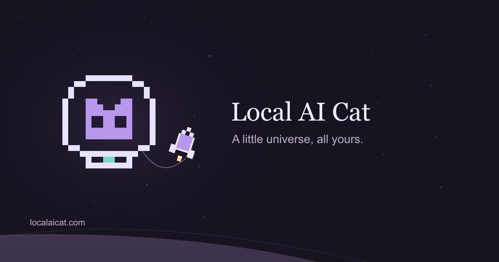

A tiny planet visit. Then off again.

localaicat.com
Share the website link to try the animation in Apple Messages. Apps that do not support video previews use the still image. You can also save the GIF or MP4.